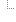
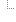

| Name | Flags | Card. | Type | Description & Constraints |
|---|---|---|---|---|
| ProcedureEu | ||||
 | 1..1 | CodeableConcept | Identification of the procedure Binding: Imaging Procedure Type (extensible) | |
 | 0..* | BackboneElement | The people who performed the procedure Slice: Unordered, Open by value:function | |
 | Content/Rules for all slices | |||
   | 1..1 | CodeableConcept | Type of performance | |
| 0..* | BackboneElement | The people who performed the procedure | |
 | ||||
 | 0..* | Coding | Code defined by a terminology system Slice: Unordered, Open by value:""$this"" | |
| 0..1 | Coding | Code defined by a terminology system Required Pattern: At least the following | |
| 1..1 | uri | Identity of the terminology system Fixed Value: http://snomed.info/sct | |
| 1..1 | code | Symbol in syntax defined by the system Fixed Value: 223366009 | |
 | 1..1 | string | Representation defined by the system Fixed Value: Healthcare professional | |
| 1..1 | Reference(PractitionerRole (EU base)) | The reference to the practitioner | |
| 0..* | BackboneElement | The people who performed the procedure | ||
| ||||
| 0..* | Coding | Code defined by a terminology system Slice: Unordered, Open by value:""$this"" | |
| 0..1 | Coding | Code defined by a terminology system Required Pattern: At least the following | |
| 1..1 | uri | Identity of the terminology system Fixed Value: http://snomed.info/sct | |
| 1..1 | code | Symbol in syntax defined by the system Fixed Value: 314789007 | |
| 1..1 | string | Representation defined by the system Fixed Value: Diagnostic imaging equipment | |
| 1..1 | Reference(Im Imaging Device) | The reference to the practitioner | |
| Documentation for this format | ||||